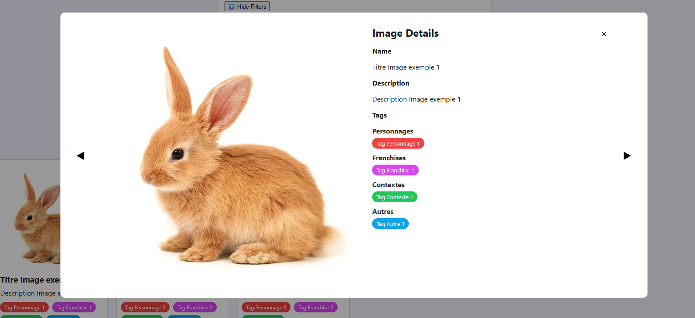
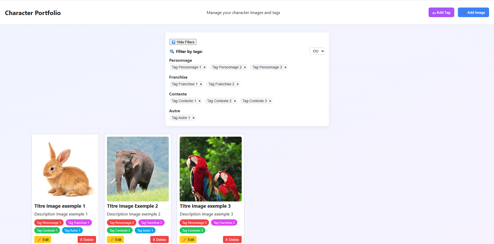
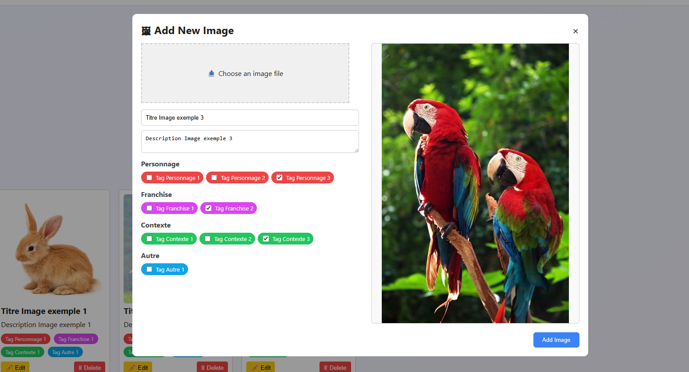

Image Portfolio
Stockez vos images avec un système de tri par tags



Overview
C'est un petit projet que j'ai voulu faire pour mon usage personnel. Il permet de stocker des images et de les trier avec un système de tags. Il y a un espace limité pour les images stockées, mais leur taille est réduite au maximum afin d'en stocker le plus possible !
Key Features
- Tri d'images par tags : Possibilité de créer et d'organiser des tags pour classer les images
- Ajouter et modifier : possibilité d'ajouter et de modifier les informations des images facilement
- IndexedDB : utilisation d'IndexedDB pour réduire la taille des images et en stocker une plus grande quantité